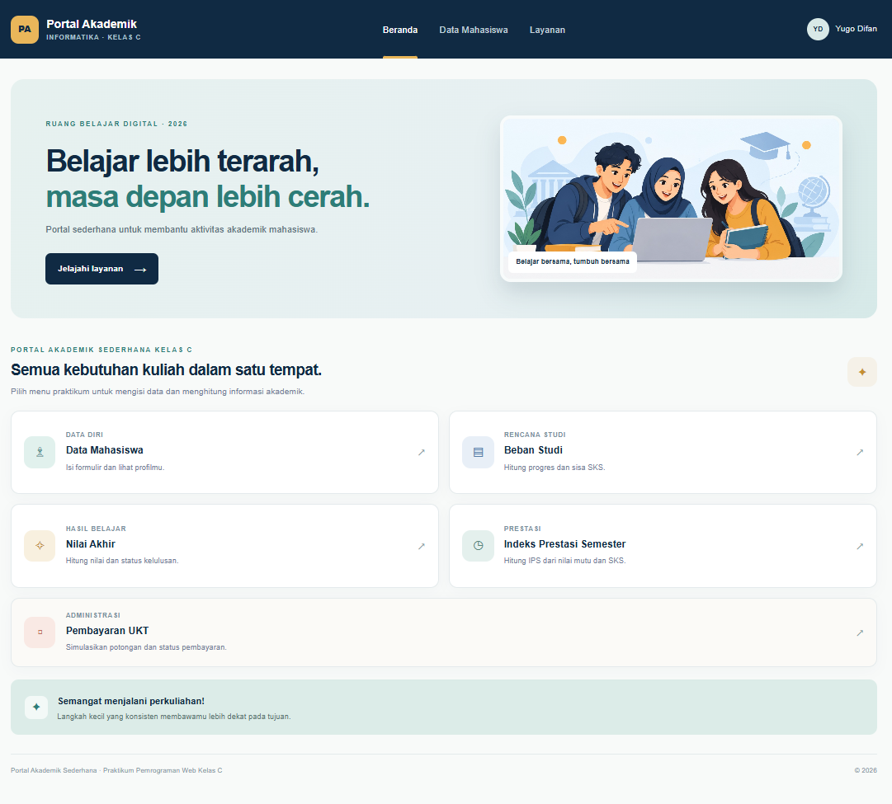
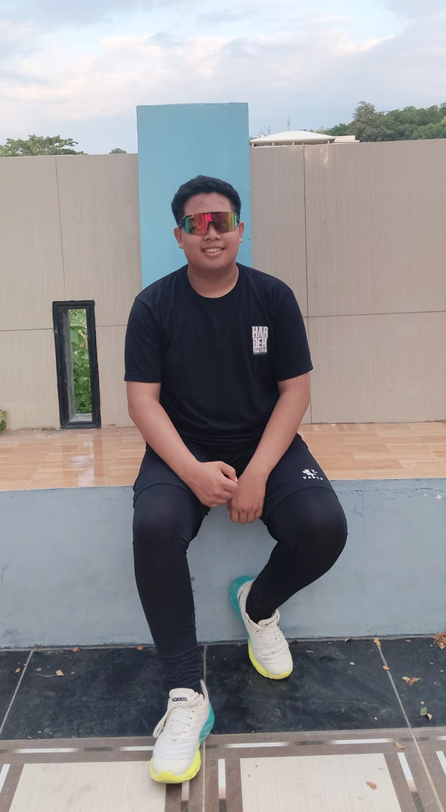
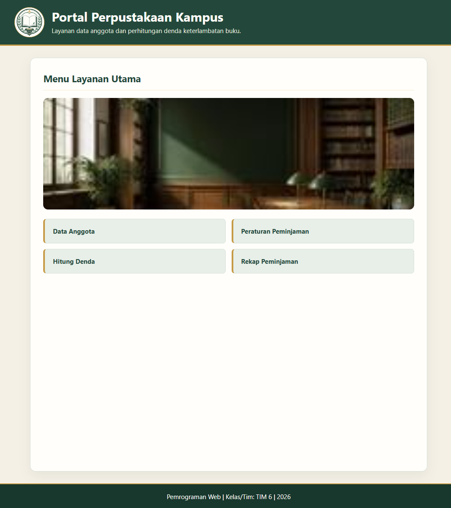
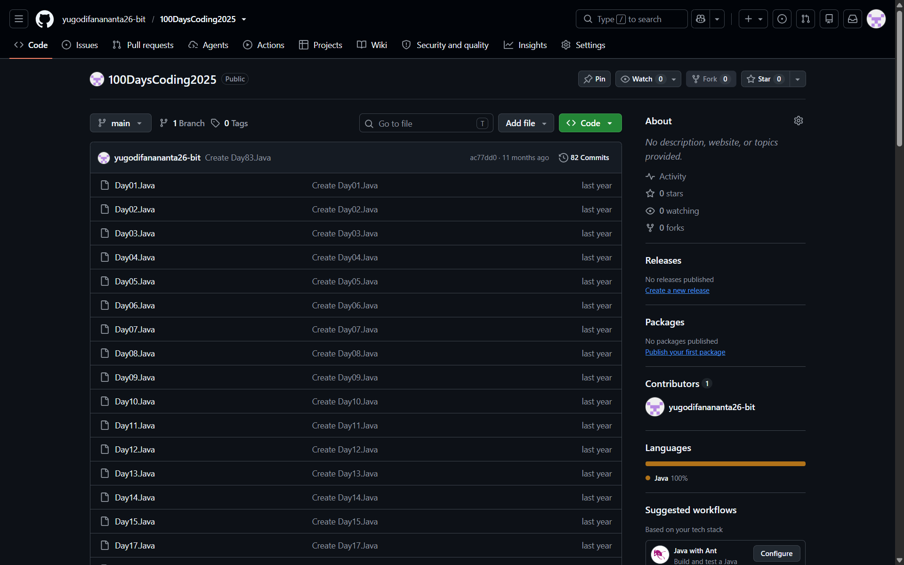

01 / TUGAS KULIAH
Web Portal Akademik
Tugas membuat portal akademik. Proyek dijalankan secara lokal menggunakan XAMPP.
Saya Yugo Difan Ananta, mahasiswa Informatika semester 3 di Universitas Sulawesi Barat. Portofolio ini berisi proyek portal akademik, website perpustakaan, dan latihan pemrograman Java.

Beberapa tugas kuliah dan latihan yang sedang saya kembangkan.

Tugas membuat portal akademik. Proyek dijalankan secara lokal menggunakan XAMPP.

Tugas membuat website perpustakaan. Proyek dijalankan secara lokal menggunakan XAMPP.

Repositori berisi latihan pemrograman Java per hari. Kunjungi GitHub untuk melihat kode dan progresnya.
Saya Yugo Difan Ananta, mahasiswa Informatika semester 3 di Universitas Sulawesi Barat. Saya sedang belajar dan mengembangkan kemampuan di bidang informatika melalui tugas kuliah dan latihan coding.
Di waktu luang, saya suka membaca dan bermain game. Saya juga sedang mencoba mengenal lebih banyak hal di dunia teknologi.
Silakan hubungi saya melalui email. Saya senang berdiskusi tentang kuliah, teknologi, atau proyek.
yugodifanananta26@gmail.com ↗Saya mahasiswa Informatika semester 3 di Universitas Sulawesi Barat. Saya senang membaca, bermain game, dan belajar lewat tugas kuliah serta latihan coding. Saya masih mengeksplorasi bidang dan keterampilan yang paling ingin saya tekuni.